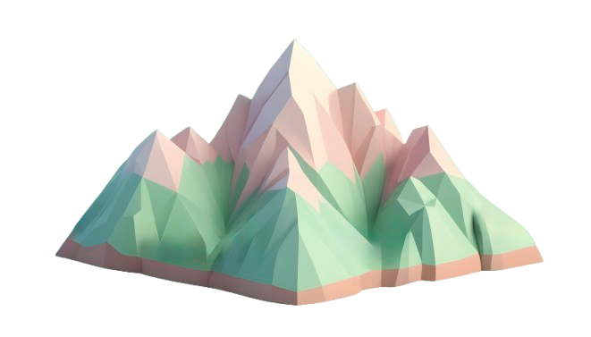

Kawasan Karst Citatah di Jawa Barat merupakan salah satu warisan geologi yang penting dengan nilai ilmiah, ekologis, dan budaya yang tinggi, namun keberadaannya menghadapi ancaman serius akibat aktivitas manusia, seperti penambangan batu kapur dan alih fungsi lahan. Dalam pendidikan geografi, kawasan ini berpotensi menjadi sumber pembelajaran untuk memahami proses geomorfologi, dinamika lingkungan, dan pentingnya konservasi. Namun, keterbatasan akses fisik ke lokasi dan kurangnya media pembelajaran interaktif menyebabkan potensi kawasan ini belum termanfaatkan secara optimal. Teknologi web-based geographic information system (WEBGIS) berbasis augmented reality (AR) dapat menjadi solusi inovatif untuk menghadirkan kawasan Karst Citatah secara virtual, sehingga siswa dapat belajar melalui visualisasi interaktif yang menarik dan mendalam.
Kawasan Karst Citatah di Kabupaten Bandung Barat merupakan salah satu wilayah yang memiliki nilai geologi, ekologi, dan budaya yang tinggi. Sebagai salah satu kawasan karst yang unik di Indonesia, Citatah menyimpan potensi besar untuk menjadi sumber pembelajaran geografi, baik di tingkat akademik maupun umum. Namun, pemanfaatan kawasan ini sebagai media pembelajaran belum optimal. Banyak masyarakat dan pelajar yang kurang memahami pentingnya kawasan karst dalam mendukung sistem hidrologi, penyediaan bahan tambang, dan keanekaragaman hayati. Hal ini memerlukan inovasi dalam penyampaian materi edukasi agar lebih menarik, interaktif, dan dapat menjangkau lebih banyak audiens.
Teknologi Geographic Information System (GIS) telah banyak digunakan dalam berbagai bidang, termasuk Pendidikan. Pengembangan WebGIS berbasis Augmented Reality (AR) menghadirkan pendekatan baru yang memungkinkan penggunanya untuk mengeksplorasi informasi geografis secara visual dan interaktif. Dengan mengintegrasikan data geospasial dalam format digital dan elemen AR, pengguna dapat merasakan pengalaman belajar yang lebih nyata dan mendalam. Pendekatan ini diharapkan mampu meningkatkan minat belajar geografi serta pemahaman terhadap topik-topik kompleks seperti geomorfologi, hidrologi, dan konservasi lingkungan di kawasan karst.
Penelitian ini dilakukan dengan mengembangkan web-based geographic information system (WEBGIS) berbasis augmented reality (AR) yang dirancang sebagai media pembelajaran interaktif dan inovatif untuk kawasan Karst Citatah. Sistem ini akan mengintegrasikan data spasial, peta interaktif, dan visualisasi 3D berbasis AR untuk memberikan pengalaman belajar yang mendalam.

Melalui WEBGIS, pengguna dapat menjelajahi kawasan Karst Citatah secara virtual, memahami struktur geomorfologi, dinamika lingkungan, serta dampak aktivitas manusia terhadap kawasan tersebut. Proses pengembangan meliputi pengumpulan dan pengolahan data geospasial, pembuatan model 3D AR yang representative, serta pengujian sistem dengan siswa untuk menilai efektivitasnya sebagai media pembelajaran. Dengan pendekatan ini, WEBGIS berbasis AR tidak hanya membantu siswa memahami materi geografi secara visual dan kontekstual, tetapi juga meningkatkan kesadaran akan pentingnya pelestarian kawasan karst. Sebagai bagian dari upaya menjaga keberlanjutan lingkungan yang dideskripsikan dari Sustainable Development Goals (SDGs) nomor 4 quality education.
Lihat visualisasi data dan peta interaktif.
Unduh peta cetak.
Jelajahi data spasial dalam bentuk leaflet geojson.
Jelajahi visual 3D dalam lingkungan nyata.
Lihat bagaimana data DEM Karst Citatah divisualisasikan dalam lingkungan nyata.